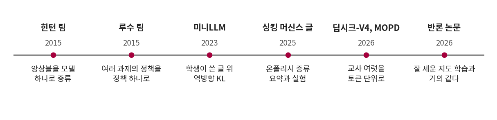
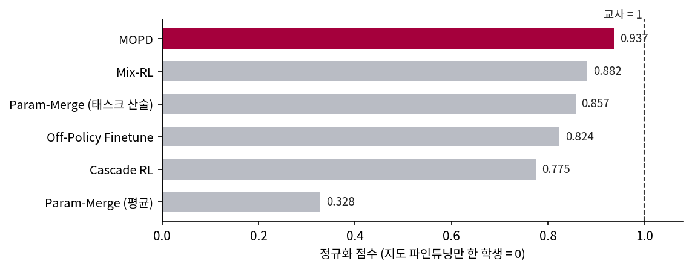
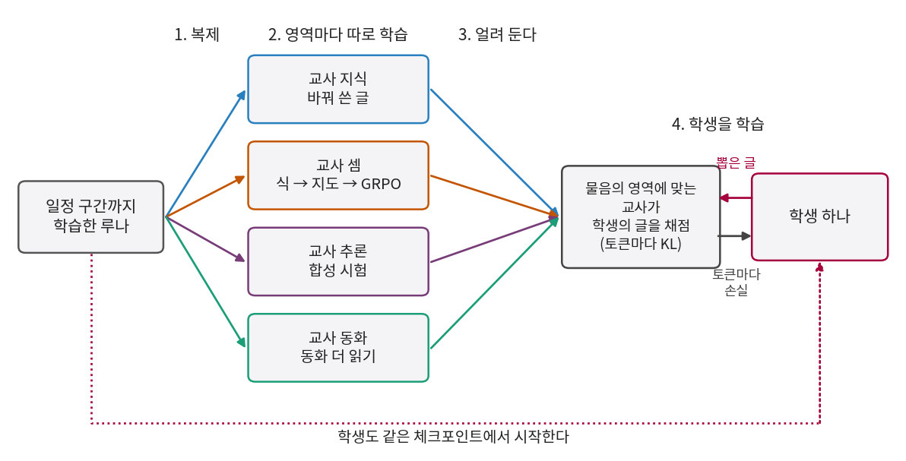
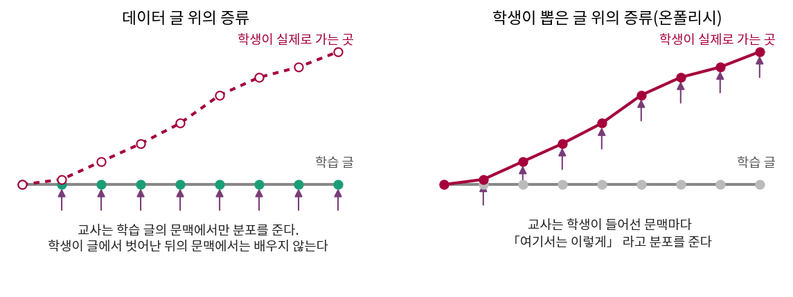

교사가 학생의 글을 채점하게 하기
파라미터를 평균 내는 대신, 교사의 파라미터는 건드리지 않고 교사가 하는 말만 따라 하게 할 수는 없을까? 동화 교사가 말할 차례에는 동화 교사의 분포를 따르고, 셈 교사가 말할 차례에는 셈 교사의 분포를 따르면 된다. 학생은 하나이고 파라미터 자리도 하나지만, 물음마다 맞는 선생님이 달라지는 과외 교실인 것이다.
그때는 교사가 하나였고, 이번에는 학생이 쓴 글을 물음의 영역에 맞는 교사에게 보낸다는 것 하나만 더해진다.
역사: 여러 교사를 학생 하나에
증류(distillation)는 2015년 힌턴 팀이 앙상블의 출력 분포를 모델 하나에 옮기면서 붙인 이름이다. 교사 여럿을 학생 하나로 합치는 시도는 강화학습에서 먼저 나왔다. 2015년 11월 안드레이 루수(Andrei Rusu) 팀의 「Policy Distillation」은 Atari 게임마다 따로 학습한 정책들을 정책 하나로 합쳤고, 합친 에이전트가 게임 하나씩 배운 교사와 한꺼번에 학습한 DQN 보다 모두 낫다고 보고했다. 게임을 하나씩 잘하는 선수 여럿을 먼저 키우고 나서 한 사람에게 옮겨 담자는 생각이다.

언어 모델에서 같은 고민은 후처리(post-training)에서 터졌다. 프리트레인이 끝난 모델에 수학, 코딩, 지시 따르기를 강화학습으로 가르치려면 영역마다 보상과 처방이 다르다. 한 모델에 차례로 하면 앞의 영역이 깎이고, 섞어서 하면 영역의 학습 신호끼리 간섭한다는 것이 뒤에 나올 MOPD 저자들의 진단이다. 2026년 4월에 올라온 딥시크-V4 보고서(arXiv:2606.19348) 5 절은 이전 판의 섞은 강화학습 단계를 온폴리시 증류로 전부 바꾸었다고 적으면서, 영역 교사 열 개가 넘게 학생 하나로 합쳤다고 했다. 뽑힌 토큰 하나로 손실을 추정하는 방법은 자원을 아끼지만 그래디언트 분산이 커서 불안정해지기 쉬우니, 어휘 전체의 분포로 역방향 KL 을 잰다는 설명도 그 절에 있다.
두 달 뒤에 같은 방법을 비교 실험으로 정리한 논문이 샤오미와 베이징대 연구진에서 나왔다. 마원한(Wenhan Ma) 팀의 「MOPD: Multi-Teacher On-Policy Distillation for Capability Integration in LLM Post-Training」(2026-06, arXiv:2606.30406)이다. 파라미터 3백억 개 모델(Qwen3-30B-A3B)에서 시작해, 지도 파인튜닝까지 한 체크포인트에서 수학, 지시 따르기, 소프트웨어 공학 교사를 강화학습으로 따로 만들고, 같은 체크포인트에서 시작한 학생에게 합쳤다. 점수는 지도 파인튜닝만 한 학생을 0, 교사를 1 로 삼아 영역마다 나눈 값의 평균으로 매겼다.

저자들은 샤오미의 파라미터 3,090억 개 모델 MiMo-V2-Flash 에도 같은 세 단계를 써서 교사와 비슷한 점수를 얻었다고 표를 실었다. 씨앗 사이 변동은 어느 표에도 없다. 뒤에서 중요해지는 결과가 하나 더 있는데, 수학 교사를 더 강한 외부 모델(Qwen3-235B-A22B)로 바꾸자 학습 시작 때의 토큰당 KL 이 약 0.04 에서 약 0.19 로 다섯 배 뛰었고, 학생의 수학 성능이 오히려 나빠졌으며 엔트로피가 0.30 에서 0.21 로 줄었다. 저자들은 학생의 정책이 봉우리 하나로 좁아졌다고 읽고, 교사와 학생의 출신이 같아야 한다고 썼다.
식과 코드
학생이 뽑은 글의 토큰 자리마다, 영역에 맞는 교사와의 KL 을 잰다.

코드는 손실 칸을 고르는 일이 전부다. 학생이 글을 뽑는 동안에는 그래디언트를 끄고, 뽑은 글을 교사와 학생에게 한 번씩 읽힌다.
# sources/mopd/run.py 에서 (발췌)
WEIGHT = {"fact": 0.25, "count": 0.25, "reason": 0.25, "story": 0.25} # 영역 비율
TEMP = 1.0 # 학생의 뽑기도 분포도 온도 1
ROLL = {"fact": (16, 32), "count": (32, 6), "reason": (32, 16), "story": (16, 32)} # (글 수, 뽑는 토큰 수)
# 3,000 스텝, 학습률 2e-4 에서 코사인으로 낮춤, 옵티마이저 AdamW
def kl_rows(student, teacher, x, mask, kind):
with torch.no_grad(), ctx():
tl, _ = teacher(x)
with ctx():
sl, _ = student(x)
logq = F.log_softmax(tl.float() / TEMP, -1)
logp = F.log_softmax(sl.float() / TEMP, -1)
kl = (logp.exp() * (logp - logq)).sum(-1) # KL(학생‖교사), 어휘 전체
return (kl * mask).sum(), mask.sum()
for d in DOMAINS: # 스텝마다 영역 넷을 모두 돈다
p = data.prompts(d) # 그 영역의 시작 문장
ys = M.rollout(m, p, ROLL[d][1], TEMP, data.ggen, stop_dot=d in SHORT) # 학생이 뽑는다
x, mask = data.masked(ys, [len(q) for q in p]) # 뽑은 토큰 자리에만 표시
parts[d] = kl_rows(m, teach[d], x, mask, "rev") # 그 영역 교사에게 보낸다
loss = sum(WEIGHT[d] * s / n.clamp(min=1) for d, (s, n) in parts.items())
셈과 추론에서는 글을 온점에서 자른다. 교사가 답 칸만 채점받아 온점 뒤의 말을 배운 적이 없으니, 그 뒤의 분포를 따라 해 봐야 얻을 것이 없기 때문이다. 처음 돌린 시험판(sources/mopd/pilot_mopd_1000.out, 1,000 스텝)에는 이 처리가 없었다.
원 논문과 어긋나는 점은 다음과 같다.
| 항목 | 원 논문(MOPD) | 우리 |
|---|---|---|
| 크기 | 3백억, 3,090억 파라미터 | 2,760만 파라미터 |
| 공통 출발 | 넓은 말뭉치로 지도 파인튜닝한 체크포인트 | 첫 실험은 동화 5,000 스텝 체크포인트, 뒤의 둘째 실험은 섞어서 가르친 체크포인트 |
| 교사 | 영역마다 강화학습 | 셈 교사만 GRPO, 나머지는 글 읽기와 지도 파인튜닝 |
| 손실 | 뽑힌 토큰의 정책 그래디언트 형태(어드밴티지를 ±5 로 자름) 또는 교사 상위 64 개 토큰의 KL. 논문은 둘이 비슷하다고 보고(0.937, 0.909) | 어휘 전체의 KL(딥시크-V4 와 같은 방향). 코드에는 정책 그래디언트 형태도 넣었지만(METHOD=mopd_pg) 시간 안에 재지 못했다 |
| 영역 비율 | 배치의 프롬프트 비율 0.35 : 0.35 : 0.3, 토큰 평균 | 영역마다 토큰 평균을 낸 뒤 0.25 씩. 토큰 평균 판도 따로 잰다 |
| 배치 | 프롬프트 2,048 개, 프롬프트당 뽑기 1 번 | 스텝마다 글 96 개(16 + 32 + 32 + 16) |
| 반복 횟수, 학습 때 온도 | 찾지 못함(시험의 뽑기 온도는 1.0) | 3,000 스텝, 온도 1 |

문제 3. 첫 토큰부터 답을 내는 시험에서 온폴리시는 무엇을 하나
Depo 1 단계처럼 시작 문장 바로 다음 토큰이 답인 물음을 생각하자. 학생은 답 토큰 하나와 온점을 뽑는다. (가) 첫 토큰을 고르는 자리의 문맥은 데이터 글 위의 증류와 학생이 뽑은 글 위의 증류에서 어떻게 다른가? (나) 그렇다면 첫 토큰에서 두 증류의 차이는 무엇에서 생길 수 있나? (다) 온폴리시의 이득이 생기려면 물음이 어떠해야 할까?

(가)는 코드를 보면 시작 문장이 같으니까… 문맥이 똑같아요. 첫 자리에서는 학생이 뽑은 게 아직 없어요.

그럼 (나)는 문맥이 아니라 KL 의 방향뿐이네요. 데이터 위에서는 KL(교사‖학생)을 쓰고 학생 위에서는 KL(학생‖교사)를 쓰니까.

그래요. 그럼 두 번째 토큰부터는요?

학생이 첫 토큰을 틀리면 틀린 문맥으로 이어 가겠죠. 그러니 글이 길수록 학생의 문맥과 데이터의 문맥이 멀어지고요.

그럼 (다)는 답이 길어야 하네요. 긴 추론을 쓰다가 한 번 미끄러진 다음을 고치는 데 쓰는 거고요. 합성 시험은 답이 대부분 두세 토큰이고 Lano 도 평균 7 토큰쯤이니까, 우리 실험에서는 이 효과가 잘 안 보일 수도 있겠어요.
그 짐작을 표에서 확인해 봐요. 데이터 위의 증류와 나란히 놓을 거니까요.